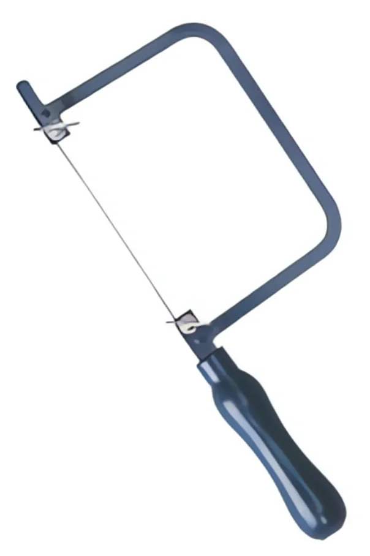

GROZ · Hacksaw Frames & Blades
Piercing Saw Frames
CAT NR PSF/A/11 · ORD NR 30200
| CAT NR (catalogue number) | PSF/A/11 |
|---|---|
| ORD NR (order number) | 30200 |
| Box quantity | 120 |
| Depth of bow (h) (inch) | 2-3/4 |
| Depth of bow (h) (mm) | 70 |
| Details | Adjustable |
| Height (H) (inch) | 3-11/32 |
| Height (H) (mm) | 85 |
| Overall length (L) (inch) | 13 |
| Overall length (L) (mm) | 325 (Max.) |
Ask for a quote The catalogue PDF, page 83
“Ask for a quote” opens this product in the catalogue: add it to your quote and send it. Buyers from Africa, the Gulf and worldwide are welcome; prices in USD, EUR or INR.
From the GROZ Workshop Tools CB-05 catalogue. Not yet verified: these details were read from the printed catalogue automatically; check the catalogue page before ordering.